Pizzeria - now on AIR [ PART-2 ]
This is the online pizza ordering portal which utilizes the power of serverless service by AWS.
In the previous post, we build the APIs for ordering, updating, and canceling an order that can be used as the backend of an ordering system.
In this post, we will put in a path to use the Facebook support of chatbot APIs for replicating the same ordering system from Facebook Messenger. To keep this post small and avoid TL;DR we will be focusing just on basic things like setting up the connection to Facebook to backend node.js app and only respond with a simple “Hello” message from it.
So, let’s start building our chatbot.
Set Up for Facebook chatbot :
We need a Facebook application that will link with your Facebook page which acts as a frontend of your messaging and all the heavy lifting of integration is done through the Facebook Application. Facebook Application for chat-bot isn’t independent, like games developed on Facebook. There has to be some front-end page that our application will latch him to do what it is meant to more like symbiote.
Steps for creating a Facebook Chatbot:
- Setup a Facebook page.
- Create a Facebook application that will serve your chatbot and connect it to Facebook page.
- Implement your chatbot and deploy it. BackEnd – require AWS lambda[language - node.js], API Gateway.
- Connect your backend chatbot app to your Facebook application.
We will be using the Claudia Bot Builder to interact with Facebook API’s for chatbot as it abstracts away the various messaging platform APIs and provides a simple, unified API for building you chatbots
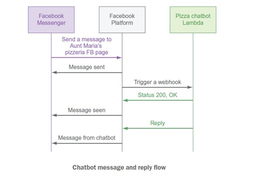
Setting up the Claudia Bot Builder in local.
Create a new folder named facebook-chatbot” and initialize you NPM project and create the entry point to bot.js this is the entry point for your application
mkdir facebook-chatbot
npm init
Installing Claudia:
To install Claudia and make the Claudia command available in your terminal run the following command:
npm install claudia -g
For installing run Claudia Bot Builder as a project dependency
install claudia-bot-builder –save
Inside your project folder facebook-chatbot”create a file name “bot.js” and put the following code:
'use strict'
const botBuilder = require('claudia-bot-builder')
const api = botBuilder(() => {
// this is message you receive when you send a message from your messenger app
return `Hello from Pizzeria Chat-bot!`
},{
// platform section restrict to generate the API path for “Facebook” only
// because Claudia also support other messaging sites like Twilio, skype, telegram, Viber
platforms: ['facebook']
}
)
module.exports = api
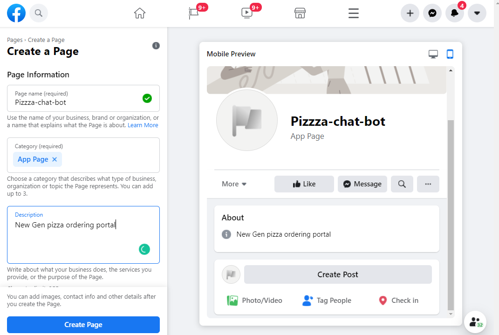 Creating Facebook Application: The next step is to create the Facebook Application, to do so visit https://developers.facebook.com/apps/ and select the “Create App”
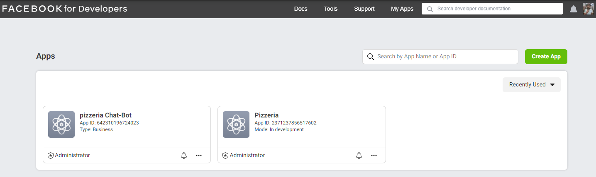 At the time of writing this post page look like this, it may be different for you since Facebook folks keep pushing the UI changes. Once you click on the “Create App” it will ask you a set of questions based on your app 1. What do you need your app to do? Select Manage Business Integration 2. App Display Name: pizzeria-ChatBot 3. App Contact Email: <your email id> 4. App Purpose: Yourself or Your own business After submitting the above questions you will land on the Dashboard of your app which will have your App ID displayed on the top right corner.
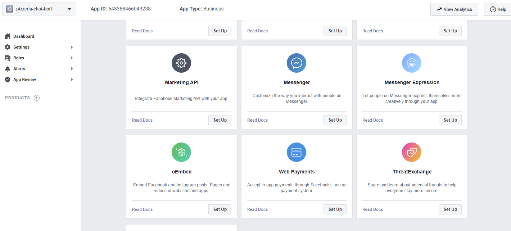
Next, we add a product to our app which will be “Messenger” click on the Set-Up
Now don't close this page as we need to add some configuration which we generated from the backend
claudia create --region us-east-1 --api-module bot --configure-fb-bot
It will take some time for Claudia to set up the thing like API Gateway, AWS Lambda, and IAM permission in the cloud.
After your code is deployed to an AWS Lambda function the command will generate and print the “webhook URL” and “verify token” which you’ll need to configure your chatbot application.
Keep the terminal open, because the process is not completed yet.
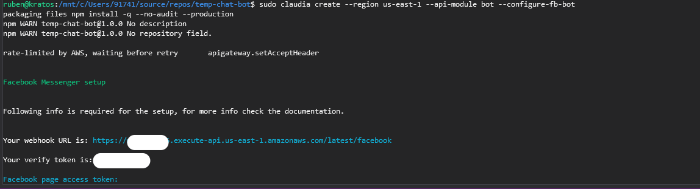 Go back to the Messenger platform setting in your browser and fill out the webhook URL and verify the token The Webhook section should look like the below image.
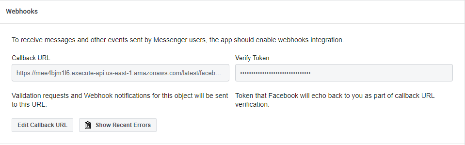 Now under the Webhooks section of the messenger setting and select “messages” and “messaging_postbacks” in the subscription field. I didn't explore more about this webhooks but what I understand is that these events were responsible for capturing the message typed in the messenger app, later which is used in the development of the business logic of the ordering system
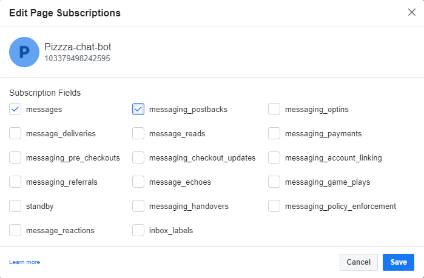 The next step is to get your Facebook page access token. To do so, go to the Access Token of the Messenger Product and select the Facebook page you created earlier from the dropdown menu, and click the “Generate Token” and press enter
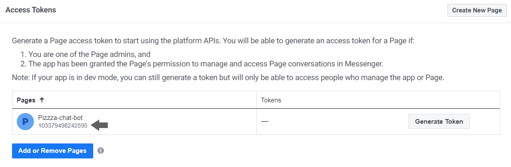 The terminal would again ask you for App secret which can be found under the Application> Setting > Basic as shown in the above image.
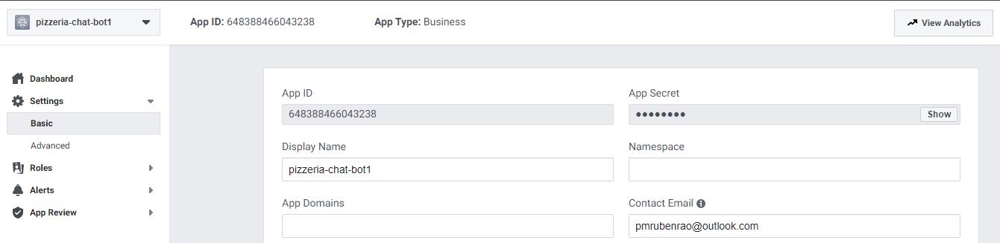
Claudia BUG fix for Facebook API
There is an issue with the Claudia bot Builder
library file for Facebook due to a recent change in the Facebook Messenger API
4.0
You need to do some changes in the Claudia bot builder <project folder>/node_module/Claudia-bot-builder/facebook/lib/script.js file to make it work
If you run into the issue even after changing the above code, you need to install 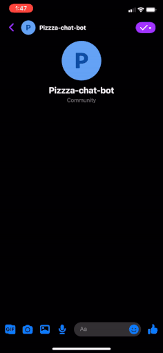
Now, this chatbot can be expanded to handle the whole ordering system which you can see in the below GIF, i'll be uploading the code in my git hub account soon for the below MVP chat-bot ordering system.
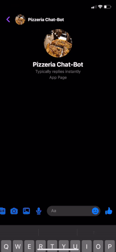
.then(() => rp.post(`https://graph.facebook.com/v2.6/me/subscribed_apps?access_token=${pageAccessToken}`));
to
.then(() => rp.post(`https://graph.facebook.com/v5.0/
use your "page_id" in the changed link, otherwise, you may get this error below
'{"error":{"message":"(#100) The parameter subscribed_fields is required.","type":"OAuthException","code":100,"fbtrace_id":"ALPik4Tqu6m133ZMGhUG8ZC"}}',
npm package “patch-package” add it to the dependencies of your project in the package.json file this will force Claudia to use the new modified <Yourfolder>/node_module/Claudia-bot-builder/facebook/lib/script.js file for building our infrastructure for the chat-bot.
After fixing this you may need to clean up the resource created by the previous instance run like remove the API gateway, lambda function, and the IAM role created by Claudia and run the above command again
claudia create --region us-east-1 --api-module bot --configure-fb-bot
Put in the Webhook URL and Token from the terminal to your Facebook application and the “Facebook page access token” can be generated in the “Access Token” section on your application page.
After that terminal will ask for “App secret” which can be found under the “Setting -> Basic” and process is the same.
Once done terminal will output the following
Now our chatbot is all set.
Open your messenger app and try messaging your Facebook page profile like “hi” or “hello” anything you want you will get the response from the bot.js return function
"lambda": {
"role": "facebook-chatbot-executor",
"name": "chat-bot",
"region": "us-east-1"
},
"api": {
"id": "wvztkdiz8c",
"module": "bot",
"url": "https://api_gateway_id.execute-api.eu-central-1.amazonaws.com/
latest",
"deploy": {
"facebook": "https://api_gateway_id.execute-api.eu-central-1.amazonaws.com/latest/facebook",
}
}
}
“Hello from Pizzeria Chat-bot!”